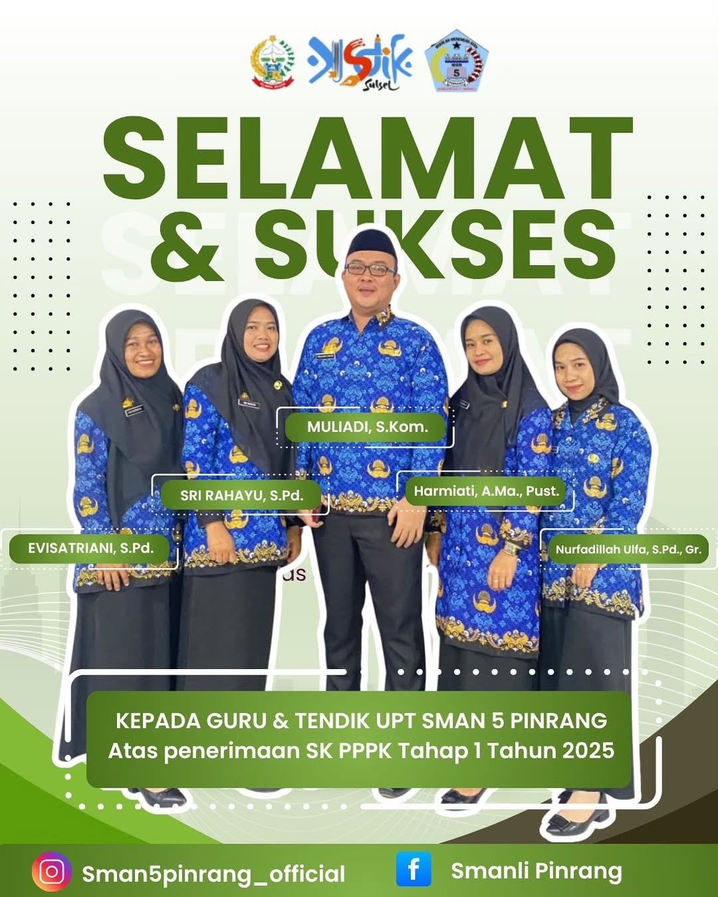

Kabar gembira datang dari keluarga besar SMAN 5 Pinrang. Lima guru dan tenaga kependidikan (tendik) resmi menerima Surat Keputusan (SK) Pegawai Pemerintah dengan Perjanjian Kerja (PPPK) Tahap 1 Tahun 2025.
-
Mereka adalah:
- Muliadi, S.Kom.
- Sri Rahayu, S.Pd.
- Harmiati, A.Ma., Pust.
- Evisatriani, S.Pd.
- Nurfadlilah Ulfa, S.Pd., Gr.
Penghargaan ini merupakan bentuk apresiasi dari pemerintah atas dedikasi dan pengabdian mereka dalam dunia pendidikan. Proses penerimaan SK ini menjadi langkah penting dalam memberikan kepastian status kepegawaian, sekaligus memotivasi untuk terus meningkatkan kualitas pembelajaran di sekolah.
Momen ini juga menjadi inspirasi bagi rekan guru lainnya untuk terus berkarya dan berprestasi, membawa SMAN 5 Pinrang menjadi sekolah yang unggul baik secara akademik maupun non-akademik.
Kepala SMAN 5 Pinrang menyampaikan ucapan selamat dan harapannya agar para penerima SK PPPK terus menginspirasi siswa dengan semangat mengajar yang tulus dan profesionalisme yang tinggi. “Semoga amanah ini dijalankan dengan penuh tanggung jawab demi kemajuan pendidikan,” ujarnya.